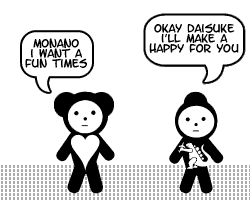
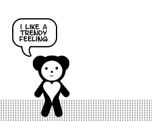
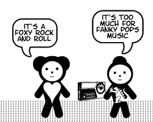
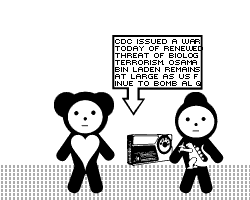
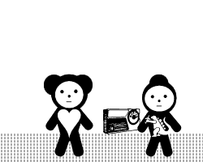
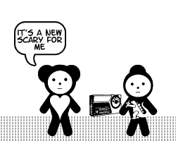
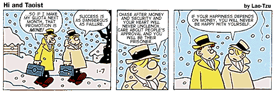
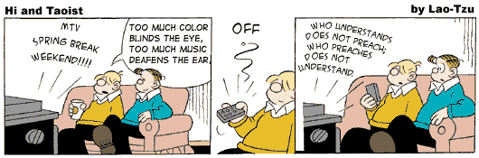

1. The first book I remember reading was The Wizard of Oz.
2. In my lifetime, I have received eight Cross pen and pencil sets as gifts.
3. I hate pen and pencil sets.
4. I can't write in longhand with anything but a Sharpie Ultra Fine Point.
5. I once gave a drowned hamster CPR.
6. The first three movies I remember seeing as a kid: The Exorcist, Suspiria, and Rosemary's Baby.
7. I still check my closets and underneath my bed for monsters.
8. The only president I've ever seen in the flesh is Gerald Ford, when I was eight.
9. The thought that ran through my head when I saw him was, "If I had a gun, I could probably shoot him from here!"
10. When I was ten, I tried to shoot my neighbor's cat with a BB gun, but I missed.
11. I can type 87 words per minute without mistakes.
12. However, I compose so slowly that it sometimes takes me an hour to write a two-paragraph e-mail.
13. In sixth grade, I created a science fair project that was so bad, even though there were only three entries from my class they decided not to give out a third place prize rather than give one to me.
14. In third grade, I did something so awful that the headmaster of my Episcopal school devoted his morning sermon to it. He became so upset that he broke down in the middle of the sermon and stormed out of the chapel.
15. When they told my mother about it, she threatened to take me down to the Red River and drown both of us rather than live with the shame.
16. No, I'm not going to tell you what I did.
17. I smoked pot in college, but stopped after watching Pink Floyd's The Wall while stoned and realizing that it made boring movies seem like they were eight hours long.
18. I am an expert at hiding, and have never been found in a game of Hide and Seek unless I wanted to be.
19. I've moved somewhere around 27 times in my life, but in only six cities.
20. I didn't meet my parents until I was three years old.
21. Until I was about nine, I thought my parents were trying to poison me. I thought they had poisoned my toothpaste, so I wouldn't swallow any when I brushed my teeth.
22. When I was four, they gave us a lecture at school on household poisons. That evening, I instructed my parents to put the Drano and bleach on a high shelf, so I wouldn't eat it.
23. In second grade, my teacher had a conference with my parents because she asked the class what we wanted to be when we grew up, and I said I wanted to work at McDonald's.
24. The first girl I ever had a crush on was Lisa, in kindergarten. My kindergarten teacher used to spank misbehaving kids, except instead of doing it herself, she would assign another student to do the deed. So, one time, after my friend David and I dug a tunnel under the playground fence, the teacher had Lisa spank the two of us. David cried, but I was like, "Wow!"
25. The family legend is that we're descended from Genghis Khan. I have my doubts about that, but it would explain my periodic impulse to invade China.
26. I have an irrational fear of bread.
27. I also have a fear of staircases where you can see through the stairs to the ground below.
28. I hate walking in the ocean because I'm afraid of stepping on a sea urchin or stonefish.
29. When I was little I used to play with black widow spiders, because I didn't know they were venomous. I would stick my finger in its web, and when it rushed out to attack me I'd pull my hand away at the last second.
30. I had a thick southern accent until I was about eight.
31. If you ever want to see my head explode, ask me to choose between sushi and Cajun food.
32. I failed Physics in 11th grade.
33. I failed Physics in 12th grade. I actually got a lower grade than the year before.
34. I took Physics again my freshman year of college, and got an A.
35. Then I failed Chemistry.
36. Anime makes me sleepy; even when it's something really good, I can't watch more than an hour of it without falling asleep.
37. I could live in hotels for the rest of my life and be extremely happy.
38. I think it's uncool to stay in a hotel and not tip the chambermaid before you leave.
39. Back in the late 80's, my mom once convinced me to perm my hair. One photo exists from that period, and I keep it around to remind me never to listen to my mother.
40. I was a kleptomaniac when I was a kid.
41. I once fell for a girl because we came out of a supermarket together and discovered we had each, unbeknownst to the other, stolen something.
41. I don't steal anymore, though, except maybe for office supplies.
42. Total value of items I've stolen in my lifetime: about $180, not including office supplies.
43. The biggest thing I ever stole was a cardboard cutout of Anthony Perkins in "Psycho III," from a movie theater in Orange County.
44. The weirdest thing I ever stole was an artificial leg.
45. The only thing that keeps me from pursuing a life if crime is a fear of anal rape if I ever get put in the slammer.
46. Having said that, I think anyone who steals from a small mom 'n pop store should be anally raped.
47. However, I condone any and all (nonviolent) crimes against large corporations.
48. The more I like people, the quieter I am around them. If I don't like you, I'll be super friendly and smile a lot. If I really, really like you, I'll avoid talking to you entirely.
49. I'm a good listener, and can listen to people bitch and moan for hours on end.
50. However, I'm always forgetting people's birthdays.
51. I don't really like celebrating my own birthday, because it seems self-indulgent.
52. The only time I've ever been moved to tears by a work of art is when I stepped into St. Peter's Cathedral in Rome.
53. I tend to keep people at arm's length.
54. When getting ready for work in the morning, if I do any part of it in the wrong order, I feel out of sorts for the rest of the day.
55. I used to believe people could read my thoughts, because I would think something about them and they would turn around and glance at me.
56. I talk to children, the mentally disabled, and dogs the same way that I talk to normal adults.
57. Unfortunately, I also expect them to behave like normal adults, so I get frustrated when they don't understand something I'm saying.
58. I always tell people I'm a terrible liar, but that's just to cover up the fact that I'm actually a masterful liar.
59. I'm just kidding about #58.
60. The more credentials people have, the less seriously I take them.
61. I'm a sucker for anything peach-flavored, peach colored, looks like a peach, or has peaches in it. I got into Cézanne only after seeing a painting of his that contained peaches.
62. However, I dislike peach pie.
63. I have the worst gaydar in the world. People I had no idea were gay until someone told me: Elton John, Liberace, Freddie Mercury, Charles Nelson Reilly, Boy George, the lead singer of Frankie Goes to Hollywood.
64. My lack of gaydar once placed me in an awkward situation in a pickup truck outside a house party, with a guy named Griswold.
65. I think it would be really cool to be encased in a gel, and have all your life functions sustained through tubes and wires.
66. I can never fantasize about being stranded on a deserted island, because I always wonder what I would do for toilet paper.
67. I think Armageddon was actually a kickass movie.
68. I've seen The Sound of Music over thirty times.
69. I often fear going to sleep, because it feels the way I imagine dying feels.
70. Sometimes I get mad at people for something they said or did to me in a dream.
71. Ever since Sandra joked about alligators living in the sewers, I can't pour boiling water down the sink without diluting it with cold water first.
72. I'm totally clueless about romantic signals, so a girl pretty much has to show up in my bed naked in order to convey that she likes me.
73. When I was seven, I realized there was no Santa Claus when I was snooping through my parents' stuff and found assembly instructions for the bike I'd gotten from "Santa."
74. I didn't know I was nearsighted until I was seven years old. Until then, I assumed everyone else had some sort of super-vision.
75. I once convinced a college professor to let me take his class from home because I wasn't psychologically fit to attend class in person.
76. I went to my admissions interview for Georgetown wearing an English cabbie cap and a scarf because I thought it would make me look more urbane. I didn't get in.
77. In my entrance interview for University of Chicago, I tried to convince the admissions officer to disregard my 1.7 GPA because I "really really" wanted to go to the University of Chicago. I didn't get in.
78. I once made Sandra cry by doing a George Takei impersonation.
79. I passed up an opportunity to buy a first edition of Stephen King's "The Gunslinger" for $80. Two years later, I saw it listed for $3000.
80. Once when I was depressed, I didn't leave my apartment for two weeks.
81. I have a fear of calling people, because I always imagine that I am interrupting them right in the middle of doing something really fun.
82. I drive my fellow comic geeks crazy because I treat my comics like shit and never bother to bag and board them.
83. When I was little, I spent most of my afternoons and weekends at my parents' store in downtown Shreveport. They let me roam around the streets unattended, so for many years I spent my Saturdays hanging out with winos at the corner liquor store.
84. No matter how much I hate somebody, if I see them eating I feel immediate sympathy toward them.
85. I am an ordained minister of the Universal Life Church, and can legally perform marriage ceremonies in many states.
86. I once sat on the edge of a 1,000-foot high cliff at the Grand Canyon, in order to conquer my fear of heights.
87. Groups of more than three people make me nervous.
88. I find cruelty to be the basest human trait, followed by disloyalty and ignorance.
89. Sometimes it makes me really sad to know that I'll never feel or experience things the same way as I did when I was a teenager.
90. If I could choose between eternal life and a normal life of perfect happiness, I would choose eternal life.
91. I fear intimacy.
92. The mere act of kneeling at a toilet causes me to vomit.
93. The scariest thing I can think of is closing your window blinds at night, and just before you close them completely you catch a glimpse of someone standing outside, looking in.
94. The second scariest thing I can think of is a closet door that is just slightly ajar.
95. And red, glowing eyes staring out at you from inside.
96. I find it difficult to relate to emotions that don't exist in movies or TV shows.
97. When I was 16 I had a huge crush on Anne Frank.
98. Sometimes I have lucid dreams, where I realize that I'm dreaming but don't wake up. They're great because you can do anything you want in them. Usually in these dreams I create huge sums of money for myself, and then get upset because I can't take the cash out into the real world.
99. Cream style corn. Cold. Sheer heaven.
100. When I die, I'd like a "sky burial," a Tibetan Buddist ceremony where the deceased's body is hacked up and fed to vultures. Failing that, I'd like the headstone of my grave to be a big mirror. I think that would be freaky.

Daisuke & Monano
01/15/2002 09:03:41 AM






Ask Jay-Z
01/28/2002 04:24:46 AM
Dear Jay-Z,
Over the past twenty years, I have accumulated a massive stockpile of pornographic
materials. My wife disapproves of my hobby and wishes me to throw away my collection.
I do not wish to discard my porn collection as it is my only source of the physical
pleasure my wife no longer provides me. What should I do?
Sincerely,
Porn Again Christian
Dear Porn Again,
I appreciate your honesty in sharing your struggle with pornography. Easy access
to pornography on the Internet has become a trap for many in recent years, resulting
in personal suffering, broken marriages, and unhappy homes.
God gave the gift of sex to us. He intended for it to be something wonderful,
producing new life and marital pleasure. But that gift becomes destructive when
we make it a means for our own selfish gratification, instead of an expression
of love within marriage, as God intended. When we use sex selfishly, we see others
merely as things instead of people--humiliating and debasing people. Pornography
serves to inflame our lusts, and our lusts easily make us their slaves.
If a person responds to a sexual temptation by willfully entertaining a lustful
fantasy or by an intention to act immorally, Jesus indicates that he is committing
sexual sin in his heart; see Matthew 5:27-38. Things are not as hopeless as they
may seem, because God promises victory over temptation. The Bible says, "No
temptation has seized you except what is common to man. And God is faithful; he
will not let you be tempted beyond what you can bear. But when you are tempted,
he will also provide a way out so that you can stand up under it" (1 Corinthians
10:13). However, it is important that we do our part by avoiding the places and
things which trigger lust and by focusing our mind on Christ and things that are
wholesome (Colossians 3:1-4; Philippians 4:8).
Avoiding pornographic sites on the Internet may require using filtering software,
placing our computer in an area of our home where it can be observed by others,
giving someone access to our saved files, or eliminating use of the Internet altogether.
Radical problems require radical solutions if we are to walk in the freedom Christ
desires for us. For information about software to filter out pornographic sites,
contact Focus on the Family, P. O. Box 35500, Colorado Springs, Colorado 80935,
telephone: (719) 531-3400.
It would be wise to share the fact of your struggle with a trusted friend or a
support group. Being accountable to someone can help you pursue the freedom you
desire. Sharing your struggle with a gospel-preaching pastor or a professional
Christian counselor would also be very useful. Books which you may find helpful
are HOW TO OVERCOME A STUBBORN HABIT by Erwin Lutzer, FINDING THE FREEDOM OF SELF-CONTROL
by William Backus, and FALSE INTIMACY by Harry Schaumburg. These books would be
available at most Christian bookstores.
Best Wishes,
Jay-Z
Hi & Taoist II
02/15/2002 04:31:02 AM

Bad Existentialist Fiction
02/21/2002 04:32:16 AM
"My field," said Werther, lighting a long black cigarette, "is time."
"That is indeed absurd speech," I replied. "What, in fact, is the absurd man? What is his field, his action?"
Werther sneered; or perhaps it was only the harsh smoke from his unfiltered Gitanes irritating his mucous membranes. "What is the absurd man? He who, without negating it, does nothing for the eternal. Not that nostalgia is foreign to him. But he prefers his courage and his reasoning. The first teaches him to live without appeal and to get along with what he has; the second informs him of his limits. Assured of his temporally limited freedom, of his revolt devoid of future, and of his moral consciousness, he lives out his adventure within the span of his lifetime. That is his field, that is his action, which he shields from any judgment but his own. A greater life cannot mean for him another life. That would be unfair. The certainty of a God giving a meaning to life far surpasses in attractiveness the ability to behave badly with impunity. The absurd does not liberate; it binds. It does not authorize all actions. The absurd merely confers an equivalence on the consequences of those actions. It does not recommend crime, for this would be childish, but it restores to remorse its futility. Likewise, if all experiences are indifferent, that of duty is as legitimate as any other. One can be virtuous to a whim."
"I understand everything you are saying," I lied. Inside my guts were as warm Brie. Warily, I watched him sip his espresso. What could I say that could match this formidable expression of genius?
Luckily, I never had to face my fear. Consumed by the awareness of his own insignificance in the face of a Godless universe, Werther snatched a pistol from his coat and blew his brains out all over my cheesecake.
Sexy iMF
03/01/2002 12:40:46 AM
Hot damn, I thought I was the only one who becomes sexually aroused by opening a new Mac box! This takes me back to when I unpacked my brand new G4 desktop....
Even the box was hot, with gorgeous pictures of the G4 printed all over it. I carefully sliced open the tape with a #1 X-acto blade and slipped my fingers inside the slit. I pulled firmly back, pulling the box flaps up, and was immediately greeted with the scent, somewhere between that of plastic and a new car, that could only come from a Macintosh.
Growing aroused, I moved more quickly, thrusting my hands into the box and curling my fingers around an opening in the white, protective styrofoam. It sighed softly as I slid it up out of the box and laid it down on the carpet beside me. I could see it now, my beautiful G4, laying on its side. Wrapped in plastic, exquisite, calling me...
My breath quickened as I reached down into the darkness of the box, and touched the G4 for the first time. The dark, metallic blue surface of the G4 was cool and supple. I ran my finger along the embossed Apple logo, teasing it, tracing soft circles around it. Then I put my hand beneath its chassis and lifted it carefully out of its styrofoam cradle.
Surrounded now by that intoxicating Mac scent, I drew upon the very depths of my willpower to keep from ripping off the plastic sheath and running my hands all over the G4. Instead, I sat cross-legged on the floor and laid the G4 gently upon my lap. Still and silent, not yet brought to glowing life, the G4 lay quiescent, its Apple logo gray and dim.
My hands trembling now as never before, I grasped the edge of the plastic sheath and pulled down, slowly; the plastic clung with the most delicate of touches to the smooth polyurethane, and parted from it with what I imagined was silent regret.
I stood then, cradling the Mac in my arms like a baby, and with exquisite tenderness placed it on the surface of my desk. I stood back and looked at it then, my prize. "Oh my God," I whispered, as the full impact of its naked beauty struck me for the first time. From my desk, the G4 regarded me with naive expectation, awaiting whatever destiny its new master had planned for it....
I am definitely spending some time on the computer this weekend....
Hi & Taoist III
03/15/2002 04:39:34 AM

March of the Vienna Fingers
05/17/2002 04:45:10 AM
I want to thank my friends from Arcturus for letting me join them on their journey through the stars. When they showed up at my door I was a little frightened at first, but they were very patient, and explained their mission to me in great detail, and then showed me their spaceship. They asked me to come with them to the Crab Nebula (of course they have their own name for it, but I would probably just insult them if I tried to write it out phonetically). I didn't know why they wanted me to go with them. What's in the Crab Nebula? I asked. They said it would make everything beautiful. I said that would be great, but what about my dog? They said my dog would also be beautiful. Oh yes! So I am going to go with them to the Crab Nebula, and they will make me into a shiny robot. A big shiny Asian robot. Vroom! Don't breathe, don't even cough, just stand very still for hours and hours, and then spin around very suddenly with your arms outstretched.
Beyond the Infinite
05/21/2002 04:46:21 AM
The Grand Slam convention in Pasadena was a lot of fun. Pretty much the entire "Trek" cast was there -- even Robert DeNiro, who wasn't even scheduled to appear. Needless to say, the fans were wetting themselves with surprise when DeNiro popped onstage. He regaled the crowd with a bunch of amusing anecdotes from the TOS years, like the time Donald Sutherland glued his Spock ears to DeNiro's butt during the filming of "Amok Time." Chloe Sevigny reduced the audience to tears with her poignant story of how the former Yeoman Rand struggled back from drug and alcohol addiction after TOS's cancellation. I was surprised to see Anthony Hopkins on the same stage as DeNiro considering their well-publicized antagonism, but I assume Hopkins was well-paid for his appearance...Hopkins talked at length about how challenging it was to step into the role of Dr. McCoy after Bob Denver's untimely death. The biggest surprise of the evening, though, was when Trek executive producer David O. Selznick appeared with brand new clips from the upcoming "Star Trek X: Nemesis." Without giving away any spoiler details, let me just say that "X" marks the spot -- for the best Trek outing since "Wrath of Khan"! The entire cast was outstanding in the scenes we were shown, especially the ones featuring Worf, which should allay any fears among the fans that Sidney Poitier would turn in yet another lackluster performance as Trek fandom's most lovable Klingon. For me, though, the highlight of the evening was when I ran into DeNiro backstage! I'd heard some horror stories about DeNiro's arrogance toward the fans, but I found him to be completely affable and easygoing, even though I probably came off like a complete dork, asking him to sign my 8x10 photo of Kirk fighting the Gorn. I asked DeNiro if he was tired of being typecast as James T. Kirk for so many decades -- DeNiro just gave me his trademark grin and said he'd be delighted to play the captain of the Enterprise until "God beams me up to the final frontier!" (And ladies, let me confirm that his hair is 100% real.) This was an awesome con overall...it definitely raises the bar for FutureCon later this year....
Missing You
05/27/2002 04:49:53 AM

John Waite sat at the table in his dressing room, wiping sweat from his face with a cool, damp washcloth. In the distance, he could still hear the screams of his fans out in the arena. Another successful stop on his American tour. Another five thousand teenaged girls clutching his album to their chests as they drifted off to sleep tonight.
Where am I, anyway? John wondered idly as he pulled his sweat-soaked t-shirt over his head and tossed it into a corner. He had already forgotten which stop of the tour he was at. After a while they all blurred together. John could remember a time when every gig had seemed as precious as a diamond; thinking about those early days now made him sad in a way he could never express in one of his frothy pop singles.
Nostalgia, in turn, made him think of Cynthia. Where was she now? John wondered. Was she happy? He hoped so, despite everything that had happened between them, the harsh words that now seemed to be the only ones he could remember from their relationship.
A memory of Cynthia flooded John's mind then, startling him with its vividness. It was their first meeting, after one of his small club shows in Lancaster, before the album had hit. She had caught John's eye immediately, blonde hair spilling out over her headband, a glittery short purple dress that barely covered her thighs, lovely legs clad in silver tights and purple legwarmers. He had flashed his most charming smile and bought her a drink. Hoping merely to get lucky, by the end of the evening he was ready to propose marriage to her.
John poured himself another glass of Veuve Cliquot and slumped back in his chair, melancholy washing over him. Cynthia. Why couldn't he get her out of his mind? Why couldn't he move on? Certainly it wasn't the lack of available female companionship; he'd already been propositioned by several female acquaintances who didn't even know that he and Cynthia had split up -- and of course there were always the groupies. John hadn't been able to bring himself to take advantage of either, however, in the months since the breakup. The notion of intimacy with a woman -- physical or emotional -- only brought more painful thoughts of Cynthia.
He hadn't heard from her in weeks, and John wondered what was going on in her life -- if she had moved on and found someone new. He found it disturbing that people who were so inextricably -- or so he had thought -- intertwined could suddenly live such completely separate lives. Did she even think of him anymore? John wondered. Or had he already become irrelevant?
That thought made him angry, and it was never more than at those moments that he wished he could simply erase all memory of Cynthia from his mind and move on with his life. Why did she haunt him so? It wasn't as if she were perfect for him; indeed, in many ways they were total opposites. Neither of them could explain their attraction to the other; it was simply something that had happened between them, like an explosive chemical reaction between two apparently harmless substances.
John looked at the telephone on the table in front of him. It would be so easy to pick up the phone now and dial her number, beg her to take him back. Only pride kept him from doing so -- he could never allow Cynthia to know how much he missed her, how desperate he was to have her back in his life. And hadn't Cynthia been the one to desert him in the first place? The part of him that was still angry was tired of chasing after her all the time. Forget that bitch, that dark part of him whispered. Find a girl who won't throw you away like a used Kleenex as soon as she's done with you.
It all made sense to John -- Lord knew his friends thought so -- and yet something within him still yearned to have Cynthia near him again, to hear her laughter and feel the bright light of her spirit warming his chilly British heart.
Before he realized what he was doing, John picked up the receiver and began to dial. He felt certain that he would get her answering machine anyway, this late on a Saturday night. It rang twice, and then someone picked up the phone.
"Hello?" It was Cynthia's voice. John's breath caught in his throat. What was he supposed to say? A moment ago he had known, but now he found himself tongue-tied. The confident swagger of his onstage persona was nowhere to be seen in the nervous, sweating idiot John saw in the mirror.
"Hello? Is anyone there?"
The sound of her voice poured into the empty vessel of John's heart like cool wine into a dusty glass. His hand trembled on the receiver as he listened to her soft breathing from God knew how many thousands of miles away. He could not bring himself to speak, but from his heart he sent every unspoken word, everything he longed to tell her, down the telephone line, like a telegraph to her heart.
At last John opened his mouth to speak, but at that moment he heard the click as Cynthia hung up the phone. After a pause John set the receiver down and cradled his head in his hands.
A knock sounded at the door of his dressing room. "John!" It was his manager, Bernie. "Let's hit the road, man -- Cleveland awaits!"
"Be there in a second," John called out. He wiped the cloth over his face one last time and then stood up, checking his look in the mirror. Get it together, man, he thought. Yes, losing Cynthia had sucked, but there was a whole world out there to conquer. Legions of screaming fans went a long way toward soothing one's heartbreak.
Soon he would be in Cleveland, and after that a dozen other cities; soon Cynthia would be no more than a dim memory. John slipped into his white linen jacket and strode toward his dressing room door. He would be okay. If he tried hard enough, in fact, he could even convince himself that he didn't even miss her at all.
"I ain't missing you, babe," John murmured as he opened the door. It sounded true even to himself.
Daisuke & Monano
09/08/2002 08:56:04 AM


Prozac Comix
11/08/2002 04:55:56 AM

Nyquil Comix
11/10/2002 04:57:09 AM